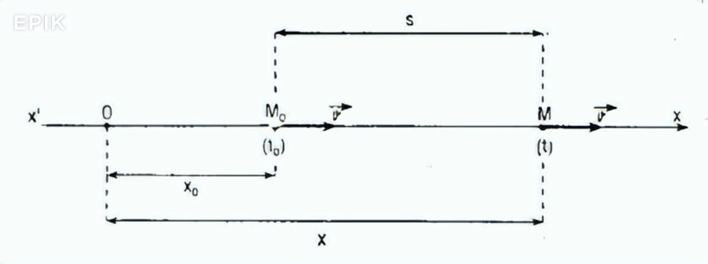
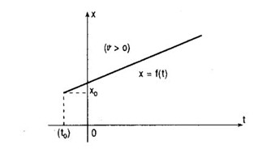
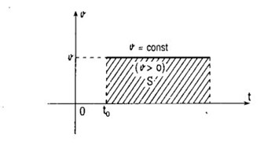

Hệ Thống Kiến Thức Phần Động Học
Nhóm 1 - 66ASPKHTN
Lý Thuyết
6 Chương cơ học được trình bày rành mạch, chi tiết công thức.
Phương Pháp Giải
13 bài toán cốt lõi với các bước giải quyết tuần tự, logic.
Thi Thử Đảo Đề
Mã đề ngẫu nhiên, xáo trộn câu hỏi, tính giờ tự động 45 phút.
§1. CHUYỂN ĐỘNG THẲNG ĐỀU
I. Các phương trình của chuyển động thẳng đều
- Tọa độ: $x = v(t - t_0) + x_0$
- Đường đi: $s = v(t - t_0)$
- Vận tốc: $v = \text{const}$

II. Đồ thị của chuyển động
- Đồ thị tọa độ theo thời gian: Là nửa đường thẳng có độ dốc (hệ số góc) là $v$. Giới hạn bởi điểm $(x_0, t_0)$ .
- Đồ thị vận tốc theo thời gian: Là nửa đường thẳng song song với trục thời gian, giới hạn bởi điểm $t_0$. Đường đi $s$ được biểu diễn bởi diện tích $S$ .

III. Công thức cộng vận tốc
Tổng quát: $\vec{v}_{13} = \vec{v}_{12} + \vec{v}_{23}$
- Cùng phương, cùng chiều: $v_{13} = v_{12} + v_{23}$
- Cùng phương, ngược chiều: $v_{13} = v_{12} - v_{23}$ (với $v_{12} > v_{23}$)
- Vuông góc với nhau: $v_{13} = \sqrt{v_{12}^2 + v_{23}^2}$

§2. CHUYỂN ĐỘNG THẲNG BIẾN ĐỔI ĐỀU
I. Vận tốc và Gia tốc
- Vận tốc trung bình: $\bar{v} = \frac{s}{t} = \frac{\sum \bar{v}_i t_i}{\sum t_i}$
- Vận tốc tức thời: $v = \frac{\Delta s}{\Delta t}$
- Gia tốc: $\vec{a} = \frac{\vec{v}_2 - \vec{v}_1}{t_2 - t_1} = \frac{\Delta \vec{v}}{\Delta t}$
II. Các phương trình cơ bản
- Gia tốc: $a = \text{const}$
- Vận tốc tức thời: $v = a(t - t_0) + v_0$
- Toạ độ: $x = \frac{1}{2}a(t - t_0)^2 + v_0(t - t_0) + x_0$
- Đường đi: $s = x - x_0 = \frac{1}{2}a(t - t_0)^2 + v_0(t - t_0)$
- Hệ thức độc lập thời gian: $v^2 - v_0^2 = 2as$
Tính chất:
- Nhanh dần đều: $av > 0$ ($a, v$ cùng chiều)
- Chậm dần đều: $av < 0$ ($a, v$ ngược chiều)
III. Đồ thị của chuyển động
- Gia tốc - thời gian: Đường thẳng song song trục thời gian. Diện tích $S$ biểu diễn vận tốc .
- Vận tốc - thời gian: Nửa đường thẳng có độ dốc là $a$. Giới hạn bởi $(t_0, v_0)$. Diện tích $S$ biểu diễn đường đi .
- Tọa độ - thời gian: Đồ thị là parabol .
IV. Đổi hệ quy chiếu
Công thức cộng gia tốc: $\vec{a}_{13} = \vec{a}_{12} + \vec{a}_{23}$
§3. SỰ RƠI TỰ DO
I. Tính chất
- Rơi tự do (không vận tốc đầu) là chuyển động nhanh dần đều.
- Gia tốc trọng lực $\vec{a} = \vec{g}$: Phương thẳng đứng, chiều hướng xuống, $g \approx 9.81 \text{ m/s}^2$.
II. Các phương trình
Về độ cao (gốc ở mặt đất, chiều dương hướng lên):
- $y = -\frac{1}{2}gt^2 + y_0$
- $v = -gt$
- $v^2 = -2g(y - y_0)$
Về quãng đường rơi (chiều dương hướng xuống):
- $s = \frac{1}{2}gt^2$
- $v = gt$
- $v^2 = 2gs$
§4. CHUYỂN ĐỘNG TRÒN ĐỀU
I. Tọa độ, Vận tốc, Chu kì, Tần số
- Tọa độ cong và góc: $s = R\varphi$
- Vận tốc dài: $v = \text{const}$
- Vận tốc góc: $\omega = \frac{\varphi}{t}$
- Hệ thức liên lạc: $v = R\omega$
- Chu kì: $T = \frac{2\pi}{\omega} = \frac{1}{n}$ (n: số vòng quay/s)
- Tần số: $f = \frac{1}{T} = n$
II. Gia tốc trong chuyển động tròn đều
Luôn có gia tốc hướng tâm với độ lớn: $a = \frac{v^2}{R} = R\omega^2 = \text{const}$
§5. CHUYỂN ĐỘNG TRÒN BIẾN ĐỔI ĐỀU
I. Gia tốc trong CĐ tròn bất kì
- Gia tốc toàn phần: $\vec{a} = \vec{a}_t + \vec{a}_n$. Vectơ $\vec{a}$ luôn hướng vào bề lõm quỹ đạo .
- Gia tốc góc: $\alpha = \frac{\Delta\omega}{\Delta t}$. Nếu $\alpha = 0$ (CĐ đều), $\alpha = \text{const}$ (CĐ biến đổi đều).
II. Các phương trình CĐ tròn biến đổi đều
Đại lượng chiều dài:
- $a_t = \text{const}$
- $v = a_t t + v_0$
- $s = \frac{1}{2}a_t t^2 + v_0 t + s_0$
- $v^2 - v_0^2 = 2a_t(s - s_0)$
Đại lượng góc:
- $\alpha = \text{const}$
- $\omega = \alpha t + \omega_0$
- $\varphi = \frac{1}{2}\alpha t^2 + \omega_0 t + \varphi_0$
- $\omega^2 - \omega_0^2 = 2\alpha(\varphi - \varphi_0)$
Ghi chú: $a_t \cdot v_0 > 0$ (hoặc $\alpha \cdot \omega_0 > 0$) là nhanh dần đều. Nhỏ hơn 0 là chậm dần đều .
III. Áp dụng vật rắn quay quanh một trục
- Quỹ đạo các điểm ngoài trục quay là các đường tròn đồng trục.
- Vận tốc góc $\omega$ bằng nhau, vận tốc dài $v$ phụ thuộc bán kính $R$.
§6. KHẢO SÁT BẰNG PHƯƠNG PHÁP TOẠ ĐỘ
I. Nguyên tắc
- Hình chiếu của vật M trên các trục tọa độ là chuyển động thẳng .
- Có tính chất chuyển động độc lập với nhau. Biết hình chiếu suy ra chuyển động thực.
II. Gia tốc và vận tốc
$\vec{a}_m = \text{Ch.}(\vec{a}_M)$ và $\vec{v}_m = \text{Ch.}(\vec{v}_M)$.
13 Bài Toán Phương Pháp Giải
§1. CHUYỂN ĐỘNG THẲNG ĐỀU
BÀI TOÁN 1: Tính quãng đường đi
Chọn chiều dương là chiều chuyển động. Áp dụng phương trình $s = vt$ .
BÀI TOÁN 2: Định thời điểm và vị trí gặp nhau
Chọn chiều dương, hệ quy chiếu. Lập PT: $x = v(t - t_0) + x_0$. Khi gặp nhau: $x_1 = x_2$. Giải tìm t và tọa độ .
BÀI TOÁN 3: Đồ thị chuyển động
Vẽ bằng cách xác định điểm (lưu ý giới hạn). Đồ thị hướng lên ($v > 0$), hướng xuống ($v < 0$). Song song (cùng vận tốc). Cắt nhau (gặp nhau tại giao điểm) .
BÀI TOÁN 4: Đổi hệ quy chiếu
Chọn HQC. Áp dụng công thức cộng $\vec{v}_{13} = \vec{v}_{12} + \vec{v}_{23}$ (cùng phương cộng/trừ, khác phương dùng hình học). Lập PT để giải ẩn .
§2. CHUYỂN ĐỘNG THẲNG BIẾN ĐỔI ĐỀU
BÀI TOÁN 5: Vận tốc trung bình
Áp dụng công thức tổng quát $\bar{v} = \frac{\sum \bar{v}_i t_i}{\sum t_i}$ .
BÀI TOÁN 6: Tính a, v, t, s
Dùng $a = \frac{\Delta v}{\Delta t}$, $s = \frac{1}{2}at^2 + v_0 t$, và $v^2 - v_0^2 = 2as$ .
BÀI TOÁN 7: Bài toán gặp nhau
Chọn HQC, lập PT $x = \frac{1}{2}a(t-t_0)^2 + v_0(t-t_0) + x_0$. Cho $x_1 = x_2$ để tìm thời điểm gặp .
BÀI TOÁN 8: Đồ thị biến đổi đều
a-t (đường ngang), v-t (đường dốc), x-t (parabol). Giao đồ thị v-t với trục hoành là lúc đổi chiều (đứng lại). Tính a và $v_0$ từ đồ thị để lập PT .
§3. SỰ RƠI TỰ DO
BÀI TOÁN 9: Tính t, s, v
Chọn chiều hướng xuống, $a=g$. Áp dụng $s = \frac{1}{2}gt^2$, $v=gt$, $v^2=2gs$ .
BÀI TOÁN 10: Liên hệ hai vật rơi
Gốc thời gian lệch thì $s = \frac{1}{2}g(t-t_0)^2$. Hai vật rơi tự do luôn CĐ thẳng đều đối với nhau do $\vec{a}_{21} = 0$ .
BÀI TOÁN 11: Ném thẳng đứng xuống
Nhanh dần đều với $a=g$, cùng hướng $v_0$. PT: $s = \frac{1}{2}gt^2 + v_0 t$ .
§4 & §5. CHUYỂN ĐỘNG TRÒN
BÀI TOÁN 12: v, a trong Tròn đều
Áp dụng $\omega = 2\pi n = \frac{v}{R}$ và $a = \frac{v^2}{R}$. Cần chú ý bánh xe lăn không trượt: cung quay = quãng đường .
BÀI TOÁN 13: a, v, n, s trong Tròn biến đổi
Gia tốc toàn phần $a = \sqrt{a_t^2 + a_n^2}$. Tính gia tốc góc $\alpha = \frac{\Delta\omega}{\Delta t}$. Số vòng $n = \frac{s - s_0}{2\pi R} = \frac{\varphi - \varphi_0}{2\pi}$ .
KỲ THI ĐÁNH GIÁ NĂNG LỰC | MÃ ĐỀ:
Thứ tự câu hỏi và đáp án đã được xáo trộn bảo mật.